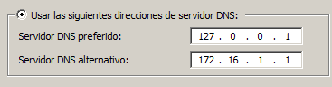
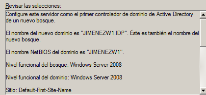
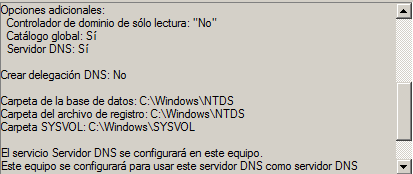
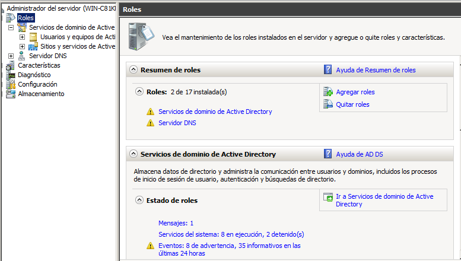

- Módulo: Sistemas Operativos
- Título del trabajo A1: PDC Unidad:5
- Componentes del grupo: Ariadna Jiménez
- Curso Académico: 2013/2014
- Fecha de entrega: 24 de Abril de 2014
En esta práctica usaremos 3 máquinas virtuales, dos windows 7 enterprise y un Windows 8 enterprise.
Vamos a montar un PDC (Controlador Primario de Dominio) con Servidor Windows 2008
Configuración inicial
En la máquina de windows 2008:
Configuramos el host con DNS1 el propio Windows-Server (127.0.0.1), y DNS2 el del centro (172.16.1.1)

Controlador de dominio
Como nombre de dominio pondremos un nombre corto, en este caso JIMENEZW1.IDP.
Para activar la función de controlador de dominios, abriremos una consola y ejecutamos el comando "dcpromo".
Luego se inicia el asistente de configuración de lo servicios del dominio de AD y como resultado obtendremos esta ventana:


Después comprobamos que se han instalado varias "funciones" para controlar el dominio:

Crear el grupo JEDI con los siguientes usuarios de dominio: "yoda,", "obiwan" y "quigon". No confundir usuarios locales con usuarios del dominio. Crear el grupo SITH con los siguientes usuarios de dominio: "emperador", "vader" y "maul".
Por último, iniciaremos sesión en la máquina del administrador para limpiar el
equipo Cliente.
Ir a "Inicio -> Panel de Control -> Sistema -> Opciones Avanzadas -> Configuración de Perfiles de usuario". Eliminar las copias de los perfiles móviles en el equipo cliente
En esta práctica hemos tenido algunos problemas por los que no pudimos completar algunos pasos. De resto pudimos terminar las demás partes sin ningún problema.